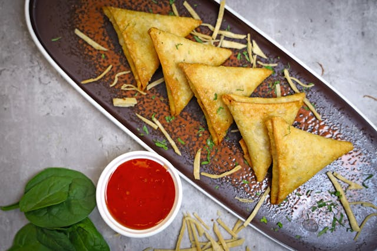

Kerala Samosa
Home

Description
A samosa is a fried South Asian pastry with a savory filling that mostly consists of vegetables like spiced potatoes, onions, and peas, but can also include meat, fish, or cheese. Its name originates from the Middle Persian word sambosag.
Ingredients
- 2 tablespoon Oil
- 1 large Onions chopped finely
- 1 tablespoon Ginger Garlic Paste
- 1 teaspoon Chilli powder
- 1 tablespoon Coriander powder
- 1 teaspoon Garam masala powder
- 1 teaspoon Turmeric powder
- 1 large Carrot grated
- 6 no Green Beans chopped finely
- ½ no Capsicum | Bell Pepper chopped finely
- ¼ cup Green Peas frozen
- 2 tablespoon Tomato Ketchup
- 2 medium Potatoes boiled, peeled and mashed
- 20 no Samosa Patti | Frozen Samosa Sheets
- Oil for Deep frying
For Sealing Paste
- 1 tablespoon All Purpose Flour
- 3 tablespoon Water